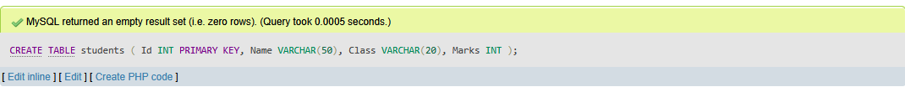

Computer Syllabus Class 11
New Course
New course of computer science is to be implemented from academic year 2077 BS.
| S.N |
Content Area |
Hour |
| 1 |
Computer system |
20 |
| 2 |
Number system and conversion Boolean Logic |
11 |
| 3 |
Computer software and operating system |
12 |
| 4 |
Application Package (Word, Excel, Powerpoint) |
5 |
| 5 |
Programming concepts and logics (C language) |
8 |
| 6 |
Web Technology-I (HTML + CSS) |
8 |
| 7 |
Multimedia |
6 |
| 8 |
Information security and cyber law |
10 |
Click here to see full curriculum in detail.
Click here for new grid and model questions.
Chapter 1: Computer system
Introduction
Computer is an electronic device device derived from the Latin word "computere" which means to calculate. It accepts raw facts and figures as an input which are isolated and uninterpreted through input device, process it according to the requirement of the user or command supplied by the user, store it before and after processing of require and produce a meaningful information as an output through an output device. Generally, computer works on IPO (Input-Process-Output) cycle. It follows GIGO (Garbage In Garbage Out) algorithm which means the output is always based on the input supplied by the user. The basic operation of computer is illustrated by following block diagram.

Some characteristics/features of computer
The implementation of computers are not only limited/confined to a small area rather they are used from simple domestic task to complex scientific research to engineering. The use of computer are increasing day-by-day due to some special features or characteristics that computer own. Several features of computer are:
Applications/Implementations/Uses of computer
The uses of computer are increased day by day. Every aspect if human life is highly influenced by computer. From simple domestic use to complex engineering and scientific solutions, computer can be used. This is due to the versatility of computer. Some of the basic implementation of computer are:
Capabilities and Limitations of computer (Pros and Cons)
Capabilities/Advantages/Merits/Pros of computer:
Limitations/Disadvantages/De-merits/Drawback/Cons of computer:
Generations of Computer
History of computers dates back to mechanical era where computer were not used for general purpose. It takes long period of time to come to this phase. Development of computer had passed through different era from mechanical to electro mechanical to digital computer. The development in different electronic components, precise engineering and hi-tech technology has change the operation of computer drastically. Earlier computer were only used for specific purpose such as counting and performing basic mathematical operation. Later on, due to the necessity and requirement of user different general purpose computer were developed. Therefore, the classification of computer on the basis of major electronic component, their architecture and modes of operation is known as generations of computer. Five different generations of computer are listed below along with their distinct features.
1. First generations computer (1946-1958 )
eg: ENIAC, EDVAC, EDSAC, UNIVAC
2. Second generations computer (1959-1964 )
eg: IBM 7000, IBM 1401, IBM 1620, NCR 304, MARK III, ATLAS
[Note: First computer brought in Nepal was IBM 1401 for population census of 2028 BS]
3.Third generations computer ( 1965-1974 )
eg: PDP-8, PDP-11, ICL 2900 series, IBM 360, IBM 370
4. Fourth generation computer (1975-1990)
eg: Apple Macintosh, IBM PC
5. Fifth generation computer (1990-onwards)
Introduction to computer system
The word system refers to the integration of several individual independent unit which are integrated together to achieve a common objective or goal. System is a set of detailed method, procedure and routines created to carryout a specific activity, performs a duty or solve a problem. In a system different unit co-ordinate with each other so that they work as a whole. Without any of the unit whole system is affected.
Similarly. computer system is also a Combination on hardware, software and peripherals which are organized together to run our computer system smoothly. Basically, our computer System works on IPO (Input Process Output) cycle. So, it is mandatory/compulsory to have different unit work together as a whole in order to convert raw facts and figure into meaningful information. Without any one of these unit computer starts malfunctioning.
The design, arrangement, construction or organization a different parts of computer system is known as computer architecture. It is the conceptual design and fundamental operational structure of a computer system. It is a framework which focus in how CPU performs internal operation. So computer architecture may also be define as the science and art of selection, inter connecting hardware components to create computer to meet functional performance and cost.
Components/Elements of Computer System
A Computer System has several have several basic components or elements which are listed below: